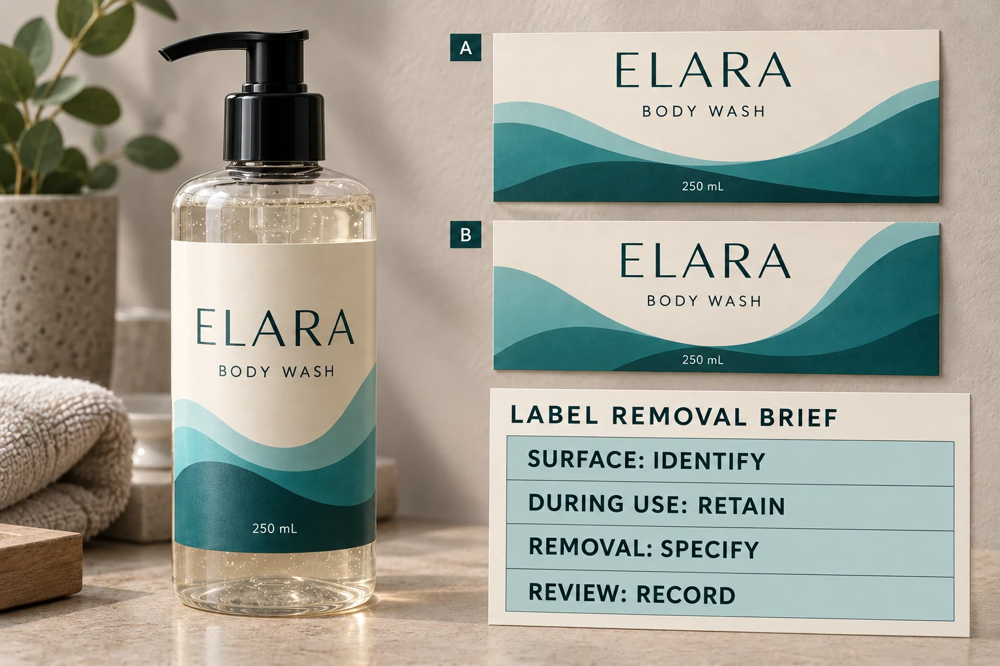

Put the intended journey on one page
Describe the container's actual route. Who fills it, who handles it during use and where does it go next? Identify whether the same container is refilled, returned for a controlled process, repurposed or discarded. Do not use refill and recycling as interchangeable descriptions.
For a proposed return system, obtain the process from its operator. A label buyer should not invent the washing conditions to make a chosen adhesive sound suitable. For a hand-removal task, describe the expected user and circumstances, including whether the removal is temporary identification or part of the main product presentation.
Our refill pouch guide covers flexible refill packaging. A pouch matching the parent bottle is a different question from how a label behaves when removed from that bottle.
Keep removable and wash-off specifications separate
Avery Dennison's removable portfolio presents targeted products intended for clean removal with suitable tack and substrate compatibility. It is a portfolio of defined constructions, not evidence that any label called removable behaves identically on every surface.
The manufacturer's glass wash-off overview describes separation during a washing process for glass reuse or recycling arrangements. That process-based function does not establish that a consumer can peel the same label by hand or remove it in ordinary bathroom use.
Use these examples to sharpen the inquiry. They do not confirm that a cited material suits your cosmetic bottle, that a local recovery system accepts it or that YT Labels supplies a particular proprietary product.
Decide what must stay in place during use
Write the retention requirement alongside the removal requirement. A body-wash label may need to remain identifiable through wet handling and contact with the product. Ask the construction supplier how the proposed label should be evaluated for the actual conditions.
Do not infer that a construction designed to release in a defined wash will detach in every encounter with water. Equally, a dry hand-peel demonstration does not establish suitability through the intended use period. The timing and conditions are part of the specification.
For broader wet-use planning, see our shampoo and body wash material checklist. Keep that use review connected to the removal brief instead of assuming one approval covers the other.
Identify the surface and the process together
Record the bottle material, coating and relevant supplier reference. A glass description alone can leave a decorative surface treatment unidentified. Include the actual label construction and sample reference too.
For process removal, ask the operator which inputs it needs the label supplier to assess. Obtain the relevant conditions and acceptance criteria directly from that operator; this article provides no washing recipe, chemical recommendation or universal release temperature.
For manual removal, agree the intended handling and observation method with the relevant technical party. Record what needs reviewing after removal, such as remaining material, adhesive residue or visible change to the container. Do not turn a photograph into a measured clean-removal result.

Use a two-stage sample record
The release needs evidence about both the period in use and the intended removal task. A practical record can keep those stages distinct:
| Field | Information to obtain | Release question |
|---|---|---|
| Container identity | Material, coating and actual sample reference | Was the intended surface evaluated? |
| Construction | Stock, adhesive, finish and supplier reference | Can the result be tied to the quoted label? |
| Retention stage | Intended exposure, handling and agreed observation | Did the sample meet the defined use requirement? |
| Removal stage | Actor, method and operator-defined conditions | Was removal assessed in the intended process? |
| After removal | Agreed observations and any unresolved surface concern | Is the container acceptable for the intended next step? |
| Disposition | Reviewer, accepted scope and next action | What is approved, pending or outside the review? |
This is an editorial decision record, not a test standard. Fill it with the supplier's and operator's actual requirements. If the removal process has not been defined, retain that gap instead of recording a generic pass.
The adhesive sample planning guide explains how to keep preparation and observation comparable. Here the additional decision is whether the intended removal mechanism belongs to the container's actual journey.
Let the label remain when that is the real requirement
Consider a hypothetical brand that refills the same identified bottle without changing its product identity. It may want the main label to remain, subject to relevant evaluation. Selecting a removable construction simply because the project uses the word refill could create the wrong requirement.
A different project collects bottles, removes the old decoration through an identified process and applies a new label. It has a reason to investigate process-removal constructions with the return operator and material supplier. That does not establish that every returned bottle can be reused or that a chosen construction qualifies for an environmental claim.
Make the choice follow the operating model. Claims about recyclability, reuse eligibility or environmental benefit need their own substantiation; label release under one process does not settle them.
Ask for a construction against defined conditions
For custom cosmetic labels, send the container reference, label size, artwork and quantity by design. Add the intended use, removal actor, operator's process information and the exact outcome still awaiting confirmation. Ask which suitable options are currently available for assessment.
Use the inquiry form to prepare the message, then send process documents and sample references by email or WhatsApp. The form does not upload attachments. A useful answer identifies a proposed construction and the evidence needed to approve it under your conditions.